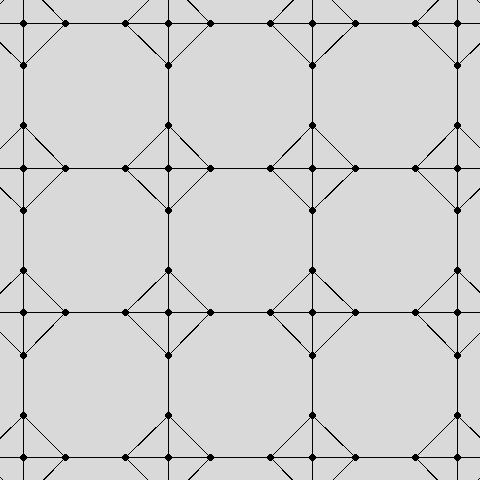
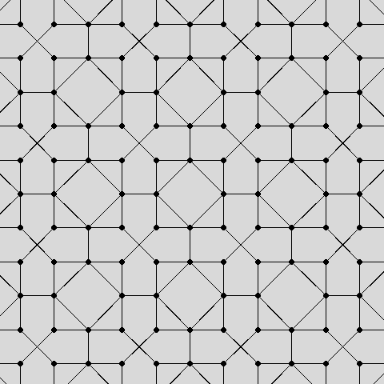
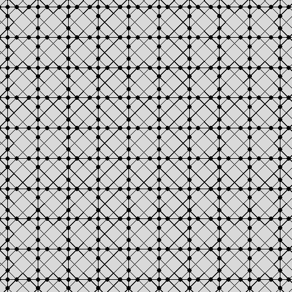
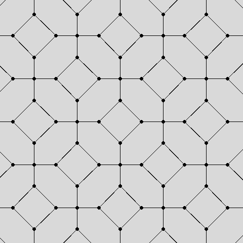

These are the truncates, quasitruncates, and bitruncates of the honeycombs from the chon and octet regiments from category 1.

14. Tich - Truncated cubic honeycomb. Cells are tics and octs. Symbol is o4o3x4x (chon symmetry) or o3x4x *b3o (octet symmetry).
15. Ticuhsquah - Truncated cubihemisquare honeycomb. Cells are tics, tosquats, and thahs. Symbol is (x3o3/2x4x4*a)/2.

16. Tatoh - Truncated tetrahedral-octahedral honeycomb. Cells are tuts, toes, and coes. Symbol is x3x4o *b3o (octet symmetry) or o3x3x3x3*a (cyclotettic symmetry).
17. Tutehtrah - Truncated tetrahemitriangular honeycomb. Cells are tuts, ohoes, and hexats. Symbol is x3x3x3o3/2*a3*c.
18. Tohtrah - Truncated octahemitriangular honeycomb. Cells are toes, choes, and hexats. Symbol is (x3x3x4o4/3*a3*c)/2.

19. Quitch - Quasitruncated cubic honeycomb. Cells are quiths and octs. Symbol is o4o3x4/3x (chon symmetry) or o3x4/3x *b3o (octet symmetry).
20. Quitcuhsquah - Quasitruncated cubihemisquare honeycomb. Cells are quiths, quitsquats, and thahs. Symbol is (x3o3/2x4/3x4/3*a)/2.

21. Batch - Bitruncated cubic honeycomb. Cells are toes. Symbol is o4x3x4o (chon symmetry), x3x4o *b3x (octet symmetry), or x3x3x3x3*a (cyclotettic symmetry). This honeycomb is noble and is the famous space-filling packing of truncated octahedra.
The following honeycombs form are self conjugate: tatoh, tutehtrah, tohtrah, and batch.
The following form conjugate pairs: tich - quitch, ticuhsquah - quitcuhsquah.